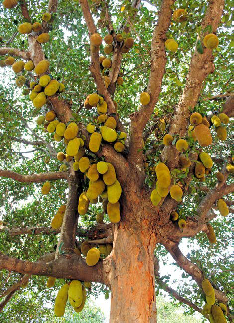

A jaca vem da jaqueira, uma arvore que pode chegar até 25m e seu tronco pode ter entre 30 a 60cm, tem uma casca áspera e solta uma seiva leitosa. Suas folhas são lisas e brilhantes e tem um formato oval tendo entre 12 a 20cm
As suas flores tanto masculinas e femininas cresem separadamente. As masculinas agrupadas em espigas em formato claviforme, já as femininas cresem agrupadas em epigas compactas.
Os frutos cresem em uma haste longa e grossa no tronco, variam de tamanho e quando amadurecem de um tom verde-amarelado para um marrom-amarelado. Possuem casca dura e pegasoja com pequenos espinhos cercados por turbeculos. Os maiores frutos tem formas variadas e possuem de 30 a 100cm e diametro de 15 a 20cm. Pode haver cerca de 100 a 500 sementes por fruta.
A jaca é considerada a maior fruta comestível do mundo, podendo atingir até 50 quilos e medir de 60 a 90 cm.
A jaca tem desde a polpa até a sementes consumidas. As suas sementes podem ser consumidas cozidas, assadas, ou na produção de farinha. A polpa pode ser consumida naturalmente, desitradata, ou na produção de varios pratos.Um exemplo é o ginataang langka prato filipino, um guisado de legumes filipino feito de jaca verde em leite de coco e especiarias, pode incluir uma grande variedade de ingredientes secundários, como frutos do mar, carne e outros vegetais.

Outra aréa de produção é na area de bebidas, como o es teler que é um coquetel de frutas indonésio. Abacate, carne de coco, geleia de capim, jaca e outras frutas são servidas com leite de coco, leite condensado, folha de pandan, açúcar e uma pequena quantidade de sal.

Suas sementes tambem tem propriedas antioxidantes, e efeitos afrodisiacos, e tambem usadas em desarranjos intestinais.